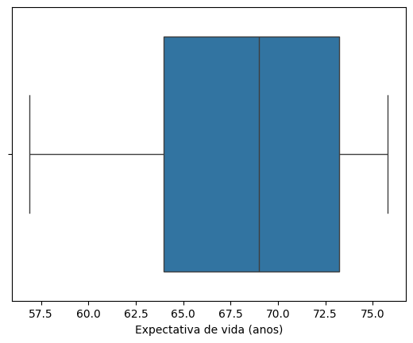
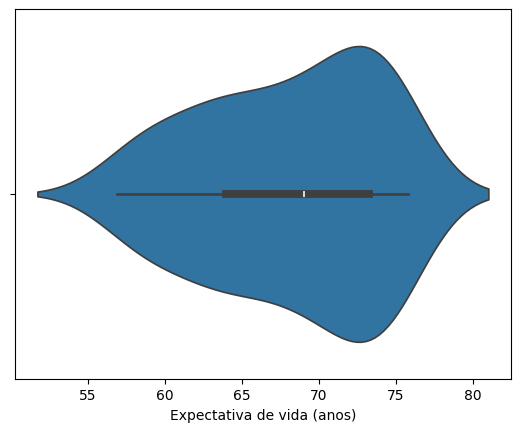
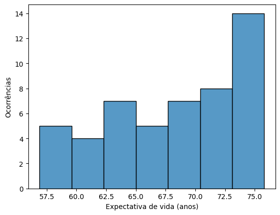
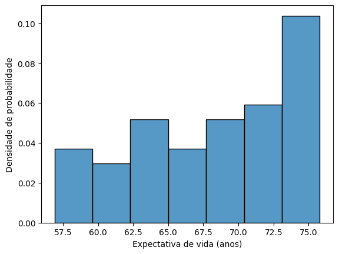
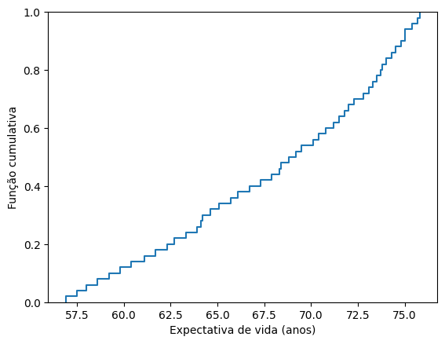

Seja a base de dados Gapminder. Tomando-se uma série amostral qualquer (buscar por “Choose individual indicators”), deve-se:
Caracterizar a amostra, inclusive graficamente; [1,5]
Com base no modelo Gaussiano e em um segundo (à escolha), verificar sua aderência à série de dados, usando o teste de Kolmogorov-Smirnov. Deve-se implementar o teste, sendo desejável validar a implementação com base em rotina disponível numa ferramenta de análise matemática ou linguagem de programação qualquer.
1 Item a)
1.1 Leitura e filtragem dos dados
Os dados escolhidos da base de dados Gapminder foram os de expectativas de vida.
Optou-se por trabalhar com os dados somente do Brasil, no período de 1970 à 2019. Sendo assim, antes de calcular os parâmetros e gerar os gráficos para caracterização da amostra, é necessário filtrar os dados obtidos.
Neste item, utilizou-se a linguagem de programação Python e para efetuar a leitura e filtragem dos dados utilizou-se a famosa biblioteca Pandas.
A leitura dos dados do arquivo lex.csv é feita pelo trecho do código abaixo.
import pandas as pddf = pd.read_csv("lex.csv")df
country
1800
1801
1802
1803
1804
1805
1806
1807
1808
...
2091
2092
2093
2094
2095
2096
2097
2098
2099
2100
0
Afghanistan
28.2
28.2
28.2
28.2
28.2
28.2
28.1
28.1
28.1
...
75.5
75.7
75.8
76.0
76.1
76.2
76.4
76.5
76.6
76.8
1
Angola
27.0
27.0
27.0
27.0
27.0
27.0
27.0
27.0
27.0
...
78.8
79.0
79.1
79.2
79.3
79.5
79.6
79.7
79.9
80.0
2
Albania
35.4
35.4
35.4
35.4
35.4
35.4
35.4
35.4
35.4
...
87.4
87.5
87.6
87.7
87.8
87.9
88.0
88.2
88.3
88.4
3
Andorra
NaN
NaN
NaN
NaN
NaN
NaN
NaN
NaN
NaN
...
NaN
NaN
NaN
NaN
NaN
NaN
NaN
NaN
NaN
NaN
4
UAE
30.7
30.7
30.7
30.7
30.7
30.7
30.7
30.7
30.7
...
82.4
82.5
82.6
82.7
82.8
82.9
83.0
83.1
83.2
83.3
...
...
...
...
...
...
...
...
...
...
...
...
...
...
...
...
...
...
...
...
...
...
190
Samoa
25.4
25.4
25.4
25.4
25.4
25.4
25.4
25.4
25.4
...
79.8
79.9
80.0
80.1
80.3
80.4
80.5
80.6
80.7
80.8
191
Yemen
23.4
23.4
23.4
23.4
23.4
23.4
23.4
23.4
23.4
...
76.9
77.0
77.1
77.3
77.4
77.5
77.6
77.8
77.9
78.0
192
South Africa
33.5
33.5
33.5
33.5
33.5
33.5
33.5
33.5
33.5
...
76.4
76.5
76.7
76.8
77.0
77.1
77.3
77.4
77.5
77.7
193
Zambia
32.6
32.6
32.6
32.6
32.6
32.6
32.6
32.6
32.6
...
75.8
76.0
76.1
76.3
76.4
76.5
76.7
76.8
77.0
77.1
194
Zimbabwe
33.7
33.7
33.7
33.7
33.7
33.7
33.7
33.7
33.7
...
73.3
73.4
73.5
73.7
73.8
73.9
74.0
74.2
74.3
74.4
195 rows × 302 columns
Como foi dito acima, trabalharemos com os dados somente do Brasil, no período de 1970 a 2019. No trecho de código abaixo são apresentadas as instruções para as filtragens necessárias e também manipulações com as estruturas de dados da biblioteca pandas para facilitar os trabalhos posteriores. Após o trecho de código, uma tabela com os dados filtrados é apresentada.
Logo, o desvio padrão da amostra é de 5,6706 anos.
1.2.4 Coeficiente de variação (\(COV\))
O coeficiente de variação é calculado por meio da Equação 4.
\[
COV = \dfrac{s}{\bar{x}}
\tag{4}\]
COV = standard_deviation / meanCOV
0.0832412044247994
Portanto, o coeficiente de variação da amostra é de 8,324%.
1.2.5 Máximo e mínimo
Os anos em que se observaram as máximas e mínimas expectativas de vida são facilmente obtidos com a biblioteca pandas, conforme é mostrado abaixo.
max_expectancy = df_brazil_life_expectancy[df_brazil_life_expectancy["Brazil Life Expectancy"]==df_brazil_life_expectancy["Brazil Life Expectancy"].max()]max_expectancy
Brazil Life Expectancy
Year
2019
75.8
min_expectancy = df_brazil_life_expectancy[df_brazil_life_expectancy["Brazil Life Expectancy"]==df_brazil_life_expectancy["Brazil Life Expectancy"].min()]min_expectancy
Brazil Life Expectancy
Year
1970
56.9
1.2.6 Quantis
Os quantis são pontos que dividem os dados ordenados em subconjuntos de dados de dimensão igual.
Alguns quantis específicos são denominados de forma especial, como os 100-quantis, conhecidos como percentis.
Os percentis 25, 50 e 75 são chamados quartis e o percentil 50 é também conhecido como a mediana da amostra.
Para obter, por exemplo, a mediana, primeiramente é necessário ordenar os dados. Se a quantidade de dados for ímpar, o valor central é a própria mediana, senão, a mediana é a média dos dois valores centrais. O trecho de código abaixo calcula a mediana da amostra.
def calculate_median(data: pd.Series): data = data.sort_values() n =len(data)if n %2==0:return (data.iloc[n //2] + data.iloc[n //2-1]) /2else:return data.iloc[n //2]calculate_median(df_brazil_life_expectancy["Brazil Life Expectancy"])
69.0
Portanto, a mediana é de 69,0 anos.
A biblioteca pandas permite obter os valores dos quantis desejados de forma prática utilizando o método quantile(), como é mostrado abaixo.
df_brazil_life_expectancy["Brazil Life Expectancy"].quantile(0.25)
63.949999999999996
df_brazil_life_expectancy["Brazil Life Expectancy"].quantile(0.50) # median
69.0
df_brazil_life_expectancy["Brazil Life Expectancy"].quantile(0.75)
73.25
Alguns dos parâmetros da amostra podem ser obtidos também de forma resumida e imediata com o uso do método describe().
df_brazil_life_expectancy.describe()
Brazil Life Expectancy
count
50.000000
mean
68.122000
std
5.670557
min
56.900000
25%
63.950000
50%
69.000000
75%
73.250000
max
75.800000
1.3 Visualização gráfica
1.3.1 Box plot
O box plot é uma representação gráfica que utiliza os quartis e os valores mínimo e máximo para representar a distribuição de dados quantitativos.
Para a amostra que estamos trabalhando, um box plot é apresentado na Figura 1. Na construção desse e de outros gráficos neste trabalho, a biblioteca utilizada foi a Seaborn.
Código
import seaborn as snsfig = sns.boxplot(x=df_brazil_life_expectancy["Brazil Life Expectancy"])fig.set_xlabel("Expectativa de vida (anos)");

Figura 1: Box plot da expectativa de vida no Brasil.
1.3.2 Violin plot
O violin plot é uma junção do box plot com um gráfico chamado kernel density plot e é frequentemente utilizado para visualizar a distribuição de dados de uma amostra.
Na Figura 2 é possível observar esse gráfico para os dados em que estamos trabalhando.
Código
fig = sns.violinplot(x=df_brazil_life_expectancy["Brazil Life Expectancy"])fig.set_xlabel("Expectativa de vida (anos)");

Figura 2: Violin plot da expectativa de vida no Brasil.
1.3.3 Histograma de ocorrências
Como temos uma amostra de tamanho maior do que 30 valores, para calcular a quantidade de intervalos (\(k\)) para o histograma, podemos utilizar a fórmula de Sturges (Equação 5).
\[
k = \log_{2} \left ( n \right ) + 1
\tag{5}\]
em que \(n\) é o tamanho da amostra. Logo, utilizando a biblioteca NumPy para calcular o logaritmo, obtemos:
import numpy as npk = np.log2(len(df_brazil_life_expectancy)) +1k
6.643856189774724
Adotaremos então 7 intervalos para construirmos os histogramas dos dados.
Um histograma de ocorrências dos dados é apresentado na Figura 3.
Código
N_BINS =7fig = sns.histplot(data=df_brazil_life_expectancy, x="Brazil Life Expectancy", bins=N_BINS)fig.set_xlabel("Expectativa de vida (anos)")fig.set_ylabel("Ocorrências");

Figura 3: Histograma de ocorrências da expectativa de vida no Brasil.
1.3.4 Histograma de frequências relativas
Um histograma de frequências relativas é apresentado na Figura 4.
Código
fig = sns.histplot(data=df_brazil_life_expectancy, x="Brazil Life Expectancy", bins=N_BINS, stat="probability")fig.set_xlabel("Expectativa de vida (anos)")fig.set_ylabel("Frequência relativa");
Figura 4: Histograma de frequências relativas da expectativa de vida no Brasil.
1.3.5 Histograma de densidade de probabilidade
Um histograma de densidade de probabilidade é apresentado na Figura 5.
Código
fig = sns.histplot(data=df_brazil_life_expectancy, x="Brazil Life Expectancy", bins=N_BINS, stat="density")fig.set_xlabel("Expectativa de vida (anos)")fig.set_ylabel("Densidade de probabilidade");

Figura 5: Histograma de densidade de probabilidade da expectativa de vida no Brasil.
1.3.6 Histograma cumulativo das observações
Um histograma cumulativo das observações é apresentado na Figura 6.
Código
fig = sns.ecdfplot(data=df_brazil_life_expectancy, x="Brazil Life Expectancy")fig.set_ylim(-0.05, 1.05)fig.set_xlabel("Expectativa de vida (anos)")fig.set_ylabel("Função cumulativa");fig.grid(True, color="gray", alpha=0.15)

Figura 6: Histograma cumulativo das observações da expectativa de vida no Brasil.
2 Item b)
Para implementar o teste de Kolmogorov-Smirnov, precisaremos da função de distribuição acumulada empírica (\(ECDF\)) dos dados trabalhados.
Para obtê-la, iremos fazer uso da biblioteca SciPy, que possui um módulo com diversas funções estatísticas. No trecho de código abaixo, é feita a implementação para obter a função de distribuição acumulada empírica.
import scipy.stats as ssECDF = ss.ecdf(df_brazil_life_expectancy["Brazil Life Expectancy"]).cdf
O teste de Kolmogorov-Smirnov calcula a máxima distância entre a função cumulativa de probabilidade do modelo hipotético (\(F_{X}\)) parametrizado e o histograma cumulativo da amostra dado pela (\(ECDF\)).
Esse teste é matematicamente expresso pela Equação 6.
No trecho de código abaixo são apresentadas funções que automatizam os cálculos para o teste de Kolmogorov-Smirnov e a geração de gráficos comparativos das funções de distribuição acumulada.
Para realizar a composição de gráficos, a biblioteca Matplotlib foi utilizada.
Para o modelo Gaussiano, as estimativas de \(E(X)\) e de \(Var(X)\) são a média amostral (\(\bar{x}\)) e variância amostral (\(s^{2}\)). Os parâmetros loc e scale utilizados para essa distribuição são a média amostral e desvio padrão amostral.
O trecho de código para efetuar os cálculos do teste de Kolmogorov-Smirnov é apresentado abaixo.